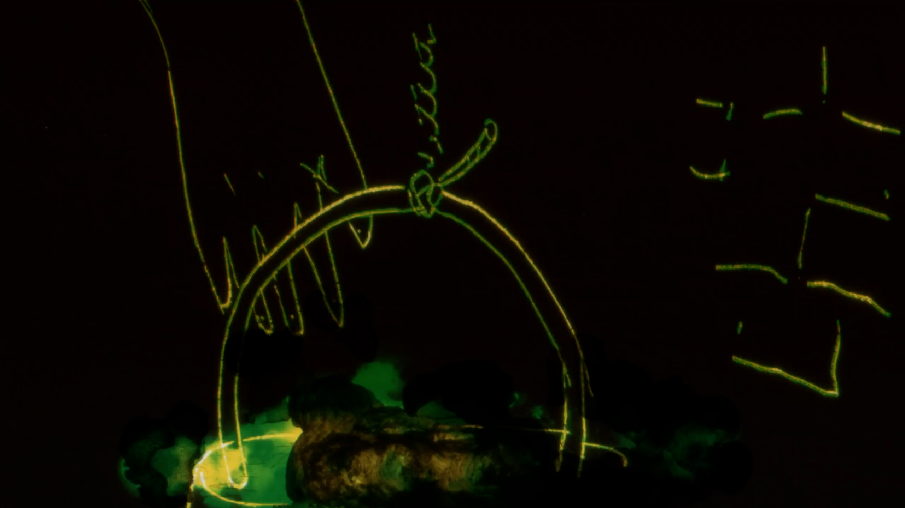
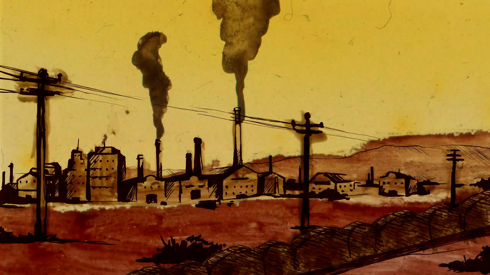
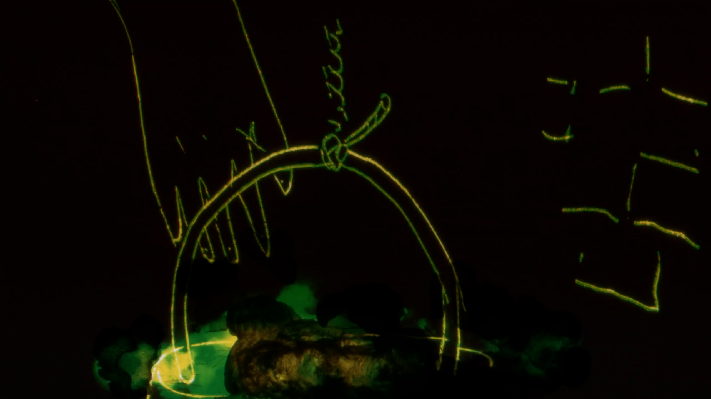
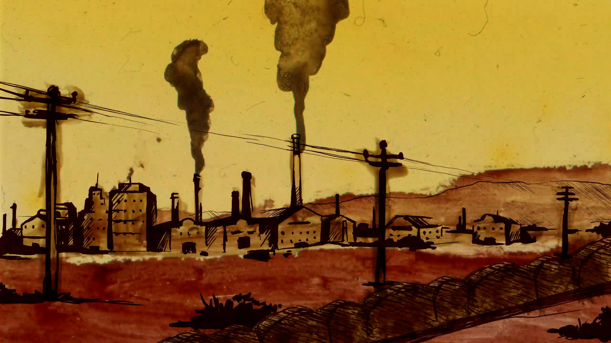

Carlos Montaña
 



Carlos Montaña, es un obrero en el Tucumán argentino de 1976. En plena jornada laboral llegan las fuerzas represivas al ingenio donde trabaja. Carlos alcanza a percibirlo justo a tiempo para escapar. Huye por las calles del pueblo hasta ocultarse en los cañaverales, los militares envían perros en su búsqueda. Carlos resignado, se imagina cómo matar al can rastrero antes de que lo delate, cuando de pronto el perro pasa a su lado sin alertar a nadie, salvándole la vida. Carlos abandona los cañaverales para ir montaña arriba en búsqueda de un lugar seguro y una nueva identidad.
Duración: 07 min 52 seg
Calificación (Edad recomendada): +13
Año de producción: 202
Dirección: Ita Romero
El Birque - Osa Estudio - Luciana Rodriguez
Guión: Matías Berelejis, Ita Romero